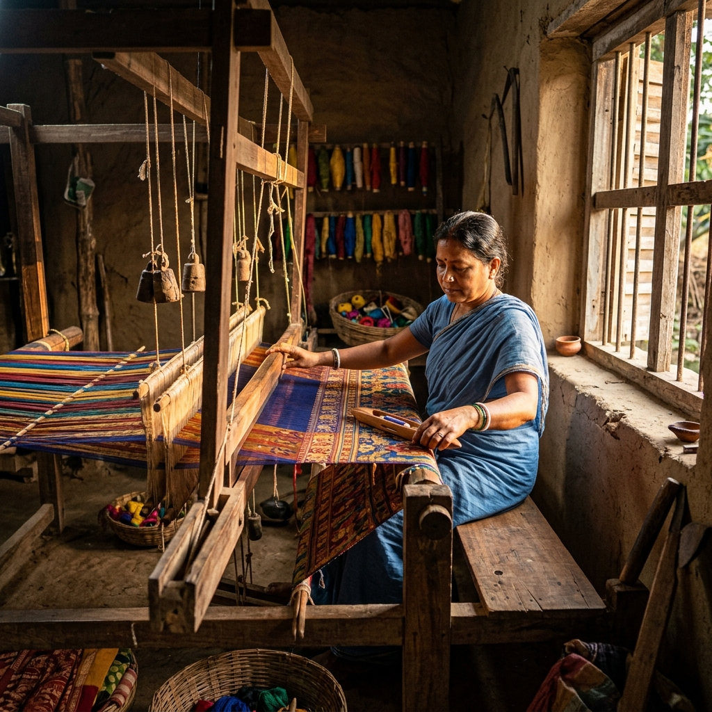

Lakshmi Devi
Ikat Weaving
Pure Silk
Cotton Sarees
"I have been weaving Ikat patterns since I was a young girl, learning the craft from my mother. Through ThreadCraft, I can finally speak to the people who wear my sarees and make exactly what they want."

Abdul Rahman
Banarasi Silk
Zari Work
Bridal Collection
"My family has woven Banarasi silk for four generations. We specialize in custom bridal orders with personalized motifs. Each saree takes 15-30 days of meticulous handwork."

Meera Sharma
Chanderi Cotton
Dupattas
Floral Motifs
"Chanderi weaving is about lightness and elegance. I love creating dupattas with delicate floral borders that can be worn every day. When a customer tells me they love my work, it keeps me going."
Are You a Weaver?
Join ThreadCraft to sell your handloom creations directly to customers — no middlemen, fair prices, and full creative control.
Apply as a Weaver